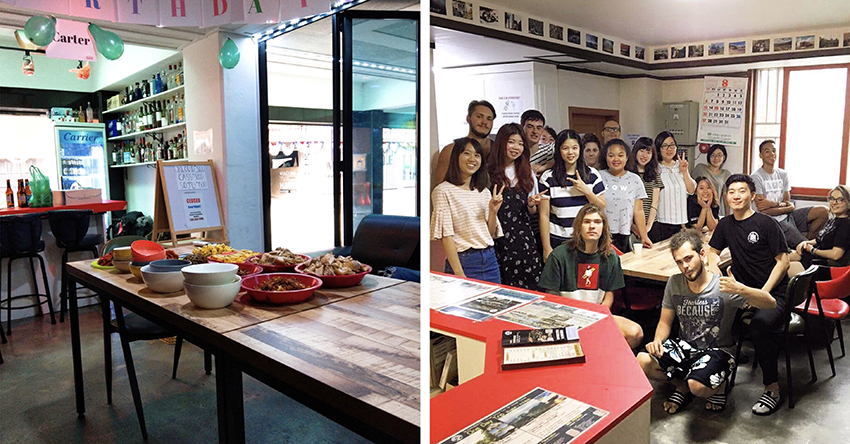

| ↑釜山必去－廣安大橋 |
「Busan」、「Work Exchange」、「Volunteer」、「Guesthouse」…… 我在Google搜尋欄裡打下這些關鍵字，期待開學前能在釜山進行一次long stay，搜尋結果中出現的每家民宿我都像海投履歷一樣寄信詢問，因為新學期即將在首爾交換，我的如意算盤是必須要無縫接軌學校宿舍的入住日，而收到確認信是在兩天後，Kimchee Busan Guesthouse確定成為我之後一個月的落腳處，也成了我日後在釜山的家。
| ↑收到確認信終於能安心了 |
釜山之於首爾，就像高雄之於台北，一樣是第二大城，也同是位於南部的海港城市 居民的熱情程度跟夏天的氣溫呈正比，而食物嘛⋯⋯當然也跟台灣一樣越南越好吃（笑。
| ↑慶州名店- 400年豆腐鍋 |
抵達民宿的隔天才開始上工，追星族我本人在跟老闆和室友打過招呼、放好行李後，馬上又搭KTX到隔壁的蔚山去看偶像的公開演唱會，因為不是大城市、場地偏僻又小，很輕易地就可以擠進搖滾區，當天回到民宿上傳表演影片到Twitter及Youtube一瞬間點閱率暴增，原來這就是Youtuber的感覺啊~
| ↑公開演唱會是一定要看的 |
Volunteer們每天早上11點準時開工，前一天跟法國人一起鋪床，也許明天就換土耳其人來陪你掃廁所，偶爾也會自己待在頂樓曬床單，那裡是柴犬Sunny的家，當天誰輪班洗衣服誰就負責陪他玩(或其實是他陪我們玩)，而鋪床是我最擅長也最喜歡的工作， 相比歐美人手長腳長，我的身材可以說是行動很方便，爬上爬下很快就可以舖好幾十張床，越快完成工作就代表有越多的自由時間，雖說表定3h/day但通常1.5~2hr就會結束，而韓國餐廳的一大優點就是下午沒有休息時間外加小菜吃到飽，在辛苦工作後還能悠閒地吃飽喝足，實在是非常感恩～（淚）。
|  | ||
| ↑民宿老闆準備給Volunteer的傳統菜 | ↑Volunteer大集合！ | |
在釜山，每片海都像你我身邊親和力極強又有魅力的那位朋友，在不同的時刻展現不一樣的面貌，初次見面就被吸引，再次相見也不覺得陌生。
| ↑尾浦鐵道散步路 |
晚上八點的迎月路安靜又吵鬧，站在觀景台就能看到對面的海雲台被鎂光燈打亮，大型音響流出的音樂聲隔了一個海灣都還聽得很清楚。走入海灘，DJ和Rapper們各個展現free style讓眾人的情緒嗨到不行，靠近舞台的泳池是搖滾區，觀眾和台上藝人不斷用水槍互相噴水攻擊，沙灘上的人們也揮著手機的手電筒跟著唱歌。
| ↑迎月路的觀景台視野很好 | ↑釜山海洋節開幕派對 | |
「砰！」忽然一聲巨響蓋過了人聲，是從海面上傳來的，大家的視線從前方舞台望向左邊的海面，那瞬間海雲台的天空變得更亮了，我們一群人跑到高處想找個更好的視野，無奈我實在太矮，土耳其的朋友看不下去便直接抱起我讓我好好看完煙火(感恩)。
| ↑主辦非常有誠意，放了5分半的海上煙火，海洋節正式開始！ |
事後回想在釜山的那一個月，我常常都覺得我是不是把累積好幾年的運氣都All in在這裡了？就像冥冥之中的安排一樣，陸陸續續住進房間的都是和我同齡的台灣女生(加一位姐姐)，我們每個早晨一起起床刷牙洗臉，每個晚上聚在一起吃大餐，各自分享今天去哪裡玩，到了凌晨三點還要繼續窩在小小的房間裡搶話聊天。
| ↑冷盤豬腳全席 |
出發前我沒抱任何期待，也做好獨自度過一個月的心理建設，但他們就像我在釜山的家人，讓我的釜山行成為值得一輩子懷念的回憶，只要打開那扇房門永遠都有人歡迎你回家， 即使四年半後的現在也依然保持著聯絡。
| ↑最後一天和老闆及室友們合照 (保護閉眼的當事人) | ↑特地早起一起做豪華早餐 | |
後來那年又再回去了民宿幾次，很意外地老闆還記得我的名字，而每次去釜山也都會下意識地說成「回」釜山， 因為已經就像是回家一樣熟悉。旅途中遇見的人果然才是最美的風景吧~